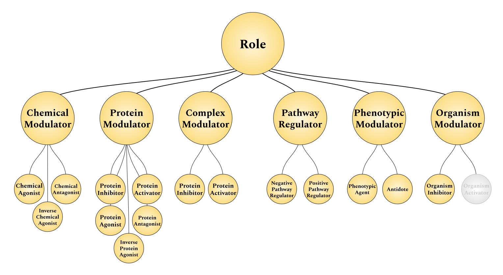

Christopher J Mungall 0000-0002-6601-2165
· cmungall
· chrismungall
Division of Environmental Genomics and Systems Biology, Lawrence Berkeley National Laboratory, Berkeley, CA, USA
The Chemical Entities of Biological Interest [1,2] ontology models chemicals, their classes, their roles, and their interrelations (Figure 1, left).
While many roles correspond to how their substituent chemicals affect proteins and other biological entities (see Figure 3), this information is not formalized nor structured in the ChEBI ontology.
Ying et al.[3] previously described how these correspondences could be theoretically formalized.
This article proposes a concrete schema and axioms through which these roles can be linked to their target entities (Figure 1, right), a suite of open source, reusable curation tools, and ultimately a manually curated database of relationships between chemical roles and their targets.
Figure 1: Schema for inference of chemicals’ relations to targets via roles. Targets may be other chemicals, proteins, protein families, protein complexes, pathways, pathologies, or organisms.
Throughout this article, the term role (in the context of the ChEBI ontology) will be used in the colloquial sense described by Batchelor et al.[4] rather than the formal sense prescribed by the Basic Formal Ontology [5,6].
This article has been typeset with Manubot [7].
Along with each named entity, we are piloting Manubot’s new feature to link to entities via Identifiers.org compact URIs (CURIEs).
Extension of the ChEBI Schema
Before generalizing the rules for the relationships between targets, it is best to examine a specific example. Chemicals that have the role p53 activator [8] obviously affect a certain target.
The type of effect is directly activates [9].
The type of the target is protein [10]. The target itself is the protein encoded by the TP53 [11] gene1.
Because the chemical CBL0137 [12] has the role p53 activator [8], it can be inferred that CBL0137 [12] directly activates TP53 [11].
While Ying et al.[3] exemplified the formalization of the relationship between roles from the ChEBI ontology and their targets using the Manchester syntax2 to convey OWL-DL, this article will only informally describe axioms.
It is intended that these descriptions are easily understandable such that the focus can remain on the practical utility of the relations curated and inferred during the work described here.
The following informal amalgamation of a shape expression (common to graph query languages like SPARQL) and predicate logic outlines how to infer if a chemical C is an activator of protein P given it has the role R and role R is related to the activation of protein P.
Table 1: Shape expression and predicate logic rules for inferring chemicals that activate proteins linked to a given role (could be stated more concisely in OWL as has_role o role_for_directly_activates -> directly_activates).
Antecedent
Consequent
ChEBI
C a Chemical R a Role C has role R
Curated
P a Protein R role for directly activates P
C directly activates P
The ChEBI ontology can be used to determine if chemical C has the role R, but not whether R is related to protein P, or any other protein for that matter.
This motivates the generation of a database of relations between ChEBI roles that activate proteins to support this type of inference.
After generalizing to other relationships and entity types, we generated such a database and included it with this article.
However, there are ChEBI roles that imply relations to proteins besides directly activates, so this definition needs to be generalized.
First, it should be noted that the relationship between role R and protein P, “role for directly activates” was not taken from an ontology.
It was named based on the relation between chemical C and protein P that role R implies.
In practice, this means that “role for” is added as a prefix.
In this example, role R that corresponds to the relation “directly activates” between chemical C and protein P is called “role for directly activates”.
A database of relations between ChEBI roles and proteins should include the directly activates relation, but also others such as the directly inhibits [13], agonist of, antagonist of, and inverse agonist of relations3.
The shape expression and predicate logic can be updated to reflect the relation m between role R and protein P that corresponds to the externally defined relation M between chemical C and protein P.
Table 2: Shape expression and predicate logic rules generalized for additional relationships.
Antecedent
Consequent
ChEBI
C a Chemical R a Role C has role R
Curated
P a Protein RmP m correspondsTo M
CMP
Again, since m is dependent on external relationship M, it is acceptable to use relationships M during curation to mitigate the need for additional ontologizing.
Therefore, an entry in the database could contain the role, relationship, and protein as shown in Table 3.
Table 3: An example database entry.
Role
Relationship
Protein
CHEBI:77731
RO:0002406
HGNC:11998
Further, there are ChEBI roles that imply relations to entities other than proteins, so this definition must be generalized.
Rather than discussing relationships between role R and protein P, it would suffice to discuss relationships between role R and target T.
The relationships themselves that are appropriate should already have well-defined semantics that dictate what types of entities are valid for the range.
This article will use externally defined relationships from sources like the Relation Ontology (RO) [14] when possible and avoid discussion of these semantics.
In many cases, roles R can be categorized based on the types of targets T that they affect (Figure 2).
Figure 2: Generalization of the ChEBI schema to include relationships between several categories of roles and their target entities.
In many cases, it is unclear what the type of entity a given ChEBI role implies.
Therefore, the database also includes explicit annotation of entity types.
This is also helpful when using databases that contain multiple entity types, such as the Gene Ontology (GO) [15], and should serve to dissuade users from inferring entity types based on databases.
Now, an entry in the database should contain a role, relation, type, and target as shown in.
Table 4: An example database entry with entry type.
Role
Relationship
Type
Target
CHEBI:77731
RO:0002406
Protein
HGNC:11998
While not strictly necessary for the reasoning described above, it could be advantageous to enrich the existing role hierarchy with further roles that directly correspond to a given relationship and entity type (Figure 3), such that maintenance of children of these terms would only necessitate the curation of the target itself.
Figure 3: A hierarchy of chemical roles. Each role corresponds to a chemical having a given relationship. Within the ChEBI hierarchy, the role [16] has three children: chemical role [17], biological role [18], and application [19]. Our interest lies with the latter two.
For example, the role enzyme inhibitor [20] clearly corresponds to the entity type being protein family and the relation being directly inhibits [13].
Therefore, descendents such as EC 3.4.24.71 (endothelin-converting enzyme 1) inhibitor [21] can directly be inferred to directly inhibit a protein family.
All that would be necessary is to annotate the identity of that family, endothelin-converting enzyme 1 [22].
While this is already well-defined for enzyme inhibitors, it is not for other roles.
Figure 3 proposes a possible hierarchy of additional roles corresponding to relations and target types.
Note that proteins and protein families are considered equivalent in this context.
This article will not fully explore this concept, though during curation, several oddities were identified, such as the fact that pathway inhibitor [23] is a subclass of enzyme inhibitor [20].
Curation Methods
Following a reasonable formalization of the schema for the extension to ChEBI, a simple set of curation guidelines were generated.
Identify a ChEBI role such that each has a well-defined relation and target.
Ground the relation to a controlled vocabulary like the RO or another carefully annotated one.
Identify the target’s type. This is often non-trivial, especially in the cases of agonists, antagonists, and inverse agonists.
For example, GABA antagonist [24] refers to the family of Gamma-aminobutyric acid (GABA) receptors [25] while it may be mistaken to mean the chemical γ-aminobutyric acid [26].
Alternatively, some roles really do seem to refer to the chemicals themselves such as vitamin B1 antagonist [27].
Ground the entity to a controlled vocabulary. Prefer those with easily accessible data such as those available through the OBO Foundry.
In the many cases when protein complexes and protein families cannot be grounded to a pre-existing resource, submit additional curation to the FamPlex resource [28] following their curation guidelines.
Below is described how roles were identified in automated or semi-automated fashion and their names were pre-processed for search.
In many cases, the Gilda grounding tool [29] was used to prioritize candidate groundings from select databases.
Affix-Based Role Identification
There are a number of naming conventions within ChEBI that were leveraged to quickly identify entities to be curated.
Many roles that imply common semantics share common affixes (i.e., prefixes or suffixes).
In the case of enzyme classes, the nomenclature is standardized so well that the EC number could be parsed out and relations could be generated automatically.
In a few cases, this was not possible, and either additional rules were added to the parser or in several cases issues were filed to the ChEBI tracker [30] to make improvements.
Table 9 enumerates several of these affixes at the end of the manuscript.
Adaptation of ChIRO
Previously, the ChEBI Integrated Role Ontology (ChIRO) [31] was generated to axiomize the relationships between select ChEBI roles and other OBO ontologies; primarily the Molecular Function branch of the GO.
Many of its ~200 entries connected EC inhibitors and activators to the corresponding molecular function in GO.
Additionally, a small number of exemplar axioms were added for other branches of GO and other ontologies, for example, anti-apoptosis utilizes the GO Biological Process apoptotic process [32].
The ChEBI role anti-arrythmia drug [33] connects to a phenotype ontology class for Arrythmia [34].
However, curation of ChIRO was manual and due to limited resources the initial set of axioms were never expanded.
ChIRO did not take advantage of lexical regularities, which could have been used to automate the axiomatization of large numbers of terms, in particular EC inhibitors and activators to the corresponding enzyme class, as shown below.
Throughout the process of incorporating ChIRO into this work, several improvements were suggested through its issue tracker [35].
Hierarchy-Driven Role Identification
While affix-based search had relatively high precision (with the exception of -agent, which listed many applications that were not relevant in this context), most entries do not have a naming convention.
Luckily, ChEBI is an ontology with pre-defined hierarchies defining roles including enzyme inhibitor [20], central nervous system drug [36], antidote [37], and many others.
For example, the 8 sub-roles of antidote [37] were all identified by affix, but none of the subclasses of central nervous system depressant [38] were.
ChEBI’s roles hierarchy is divided into three parts: chemical role [17], biological role [18], and application [19]. Within the latter two are the most interesting roles for curation, but not all are relevant. Therefore, a blacklist was developed including irrelevant applications like protecting group [39], dye [40], and MALDI matrix material [41] as well as irrelevant or misclassified biological roles like provitamin [42], insect attractant [43], and α-D-GalN-(1→4)-[α-DD-Hep-(1→2)]-α-D-GalA-yl group [44]. The remaining elements from these two role hierarchies were curated.
As curation over the remaining parts of the ChEBI hierarchy resulted in the largest number of suggestions, the curation scripts were careful to remove results from previously-curated terms to reduce curator fatigue.
Additionally, a list of false positives was developed and maintained throughout curation to reduce the number of propositions and ultimately reduce curator fatigue.
Summary Statistics
There are several ways of summarizing the 828 roles that have been curated so far.
Below, the Figure 4 summarizes the types of modulations and target entity types.
Figure 4: Summaries over the types of modulations and target entity types covered by the database so far.
Inference
Before outlining a generalized strategy for inference, the liver X receptor inverse agonist [45] will be presented as an example role corresponding to the inverse agonism of the LXR family of proteins.
Its definition implies that chemicals that have this role should be inferred to affect the two members of this family LXRα [46] and LXRβ [47].
Therefore, the shape expression from Table 2 can be extended to handle protein families over which inference should be extended to their respective members in Table 5.
Table 5: Shape expression and predicate logic rules for reasoning over protein family memberships.
Antecedent
Consequent
ChEBI
C a Chemical R a Role C has role R
Curated
G a Protein Family RmG m correspondsTo M
External
P a Protein P a G
CMP
However, we have a number of hierarchical resources besides proteins, and sometimes these resources are several levels deep.
Additionally, chemicals and roles both have their own hierarchies by ChEBI.
In Table 6, the a* notation is to show variable length traversals through “is a” relationships.
This means if A a B and B a C, then A a* C is true. This holds for chains of arbitrary length.
In the context of the a* operator, it is also true that A a A.
Finally, Table 6 presents a fully generalized inference framework.
Table 6: A fully generalized shape expression and predicate logic rules for inference over hierarchies.
Antecedent
Consequent
ChEBI
C a Chemical R a Role c a* C r a* R c has role r
Curated
T a Target rmT m correspondsTo M
External
t a* T
cMT
Linking Roles to Gene Ontology Molecular Functions through Enzyme Classes
Figure 5: Schema for inference of chemicals’ relations to molecular functions via roles and enzyme classes
Following the exhaustive mapping from chemical roles classifying activators or inhibitors of given enzyme classes, the EC2GO mapping [48] provided by GO can be applied to infer on to which molecular function each chemical role exerts its effect.
Like in the first example where relation m between role R and target T was defined based on relation M between chemical C and target T, we define relation MF to correspond to the relationship between a chemical and a molecular function corresponding to a given enzyme as shown in Table 7.
Table 7: Shape expression and predicate logic rules inferring chemical relations to molecular functions.
Antecedent
Consequent
ChEBI
C a Chemical R a Role C has role R
Curated
E an Enzyme RmE m correspondsTo M m correspondsToFMF
GO
F a Molecular Function E hasFunction F
CME CMFF
Implementation
The acquisition of external resources and inference over hierarchies is accomplished by a simple script whose installation and execution is mediated by the Tox [49] configuration available at https://github.com/chemical-roles/chemical-roles.
It relies heavily on the PyOBO Python package [50] to acquire hierarchical data sources from OBO Foundry and generate OBO-like structures for several other resources, notably HGNC, GO, InterPro, etc.
Summary Statistics
Inference over entity hierarchies resulted in over 424K new relationships.
Figure 6 summarizes them by modulation and target entity type.
Notice that each has increased by several orders of magnitude essentially for free by leveraging a vast amount of previously curated, high quality content.
Figure 6: Summaries over the types of modulations and target entity types in inferred relationships. Inference can be optionally extended over role hierarchies, which produces millions of relations.
Interoperability
While the manually curated and inferred relations arising from this work are distributed in a simple format appropriate for wide reuse, we highlight two use cases below.
Uptake by ChIRO and OBO
One of the goals of OBO is to facilitate modular ontology development, and provide a set of richly interlinked ontologies.
For example, many ontologies such as GO and HPO are axiomatized using ChEBI [51] for example, gliotoxin catabolism [52] has-input some gliotoxin [53].
ChEBI is not itself axiomatized in this way.
The ChIRO ontology was originally created as an overlay on top of ChEBI to provide this additional level of linkage.
This provides multiple advantages - users interested in concepts such as Arrythmia [34] in HPO can navigate to the drugs that exacerbate or inhibit it.
In particular, the use of axioms that connect from ChEBI back to GO allow for pathway queries when used in combination with GO-CAMs [54], for example reasoning from a gene that is upstream of a process that regulates biosynthesis of a particular chemical that itself acts as an inhibitor of another GO activity.
A workflow has been developed using Dead Simple OWL Design Patterns (DOSDP) [55] and the Ontology Development Kit (ODK) [56].
DOSDPs are a generic framework that allows for generation of OWL terms and axioms using specific patterns.
The patterns are represented in a YAML file and contain slots for variables such as chemical classes from ChEBI.
The specific fillers for each variable in the pattern are represented as rows in a tab-separated values (TSV) file, which are then run through a pipeline via the ODK to generate new terms that include logical axioms that were specified by the pattern, that can be subsequently imported into the ontology.
Examples from ChIRO can be found at https://github.com/obophenotype/chiro/tree/master/src/patterns.
Conversion to the Biological Expression Language
The Biological Expression Language (BEL) [57] is a domain specific language (DSL) for storing rich biomedical relations, supporting data integration [58].
The relationships curated and inferred in this work have a one-to-one correspondence with BEL statements as described in Table 8.
The internal BEL DSL in the PyBEL software package [59] was used to implement a conversion that is included with each export.
Table 8: Mapping of relationships to BEL statements.
Relation
BEL Example
Activation, Agonist
a(X) directlyIncreases act(p(Y))
Inhibition, Inverse Agonist, Antagonist
a(X) directlyDecreases act(p(Y))
Modulator
a(X) regulates act(p(Y))
Concluding Remarks
This article identified an area of improvement in the ChEBI ontology, presented a schema for curating that data, scripts for assisting in curation, and ultimately a curated database of role-modulation-target triples.
It also presented an informal framework for inference and an implementation for doing that inference. The results of curation and inference are both available directly through the GitHub repository at https://github.com/chemical-roles/chemical-roles.
Like with most curation, this work is not complete. Curation will continue using the procedures described until exhaustion - about another 800 roles remain.
It would also be advantageous to generalize this curation technique from the roles in ChEBI to the roles in MeSH, a resource notorious for its lack of cross-references with other public biological data sources.
Several examples have already been included in the database, an ontology of chemicals from PubChem and MeSH pharmacological roles similar to ChEBI’s is available through the PubChem FTP server4 that enable similar inference to that presented here.
Finally, this resource should be made as interoperable with others as possible.
It was not designed to compete with ChEBI or ChIRO, but rather to complement and enrich them.
A future goal is to automate the upload of the results to WikiData through a bot to bolster their chemical data integration efforts.
Most importantly is to enable the ChEBI curators and the greater OBO community to best intake these relations into their ontologies and inference frameworks to benefit their work.
Resource Availability
All code used in the curation workflow is available at https://github.com/chemical-roles/chemical-roles under the MIT License.
All manually curated data comprising the database are also available at https://github.com/chemical-roles/chemical-roles under the CC0 License.
All code and data are archived on Zenodo at https://doi.org/10.5281/zenodo.3883800.
Acknowledgements
This work would not have been possible without the work done by the excellent team of curators and maintainers of ChEBI, especially Janna Hastings and Adnan Malik.
Author Contributions
CTH designed the study. CTH, NV, MH, and DDF curated content.
CTH, CM, NV and VC wrote the manuscript.
All authors contributed to editing and revision.
All authors have approved the final manuscript.
Conflict of Interest
The authors declare that they have no conflict of interest.
References
1. The ChEBI reference database and ontology for biologically relevant chemistry: enhancements for 2013.
Janna Hastings, Paula de Matos, Adriano Dekker, Marcus Ennis, Bhavana Harsha, Namrata Kale, Venkatesh Muthukrishnan, Gareth Owen, Steve Turner, Mark Williams, Christoph Steinbeck Nucleic acids research (2012-11-24) https://www.ncbi.nlm.nih.gov/pubmed/23180789
DOI: 10.1093/nar/gks1146 · PMID: 23180789 · PMCID: PMC3531142
2. ChEBI in 2016: Improved services and an expanding collection of metabolites.
Janna Hastings, Gareth Owen, Adriano Dekker, Marcus Ennis, Namrata Kale, Venkatesh Muthukrishnan, Steve Turner, Neil Swainston, Pedro Mendes, Christoph Steinbeck Nucleic acids research (2015-10-13) https://www.ncbi.nlm.nih.gov/pubmed/26467479
DOI: 10.1093/nar/gkv1031 · PMID: 26467479 · PMCID: PMC4702775
3. Use of multiple ontologies to characterize the bioactivity of small molecules
Yan Ying, Janna Hastings, Jee-Hyub Kim, Stefan Schulz, Christoph Steinbeck, Dietrich Rebholz-Schuhmann http://ceur-ws.org/Vol-833/paper68.pdf
4. Formal ontology in information systems: proceedings of the Sixth International Conference (Fois 2010)
Antony Galton, Riichiro Mizoguchi (editors) IOS Press (2010)
ISBN: 9781607505341
5. Functions in Basic Formal Ontology
Andrew D. Spear, Werner Ceusters, Barry Smith Applied Ontology (2016-06-22) https://doi.org/f8z4js
DOI: 10.3233/ao-160164
6. Structured Descriptions of Roles, Activities,and Procedures in the Roman Constitution
Yoonmi Chu, Robert B. Allen arXiv (2015-02-16) https://arxiv.org/abs/1502.04108
7. Open collaborative writing with Manubot
Daniel S. Himmelstein, Vincent Rubinetti, David R. Slochower, Dongbo Hu, Venkat S. Malladi, Casey S. Greene, Anthony Gitter PLOS Computational Biology (2019-06-24) https://doi.org/c7np
DOI: 10.1371/journal.pcbi.1007128 · PMID: 31233491 · PMCID: PMC6611653
28. FamPlex: a resource for entity recognition and relationship resolution of human protein families and complexes in biomedical text mining
John A. Bachman, Benjamin M. Gyori, Peter K. Sorger BMC Bioinformatics (2018-06-28) https://doi.org/gg3knp
DOI: 10.1186/s12859-018-2211-5 · PMID: 29954318 · PMCID: PMC6022344
51. Dovetailing biology and chemistry: integrating the Gene Ontology with the ChEBI chemical ontology.
David P Hill, Nico Adams, Mike Bada, Colin Batchelor, Tanya Z Berardini, Heiko Dietze, Harold J Drabkin, Marcus Ennis, Rebecca E Foulger, Midori A Harris, … Jane Lomax BMC genomics (2013-07-29) https://www.ncbi.nlm.nih.gov/pubmed/23895341
DOI: 10.1186/1471-2164-14-513 · PMID: 23895341 · PMCID: PMC3733925
54. Gene Ontology Causal Activity Modeling (GO-CAM) moves beyond GO annotations to structured descriptions of biological functions and systems
Paul D. Thomas, David P. Hill, Huaiyu Mi, David Osumi-Sutherland, Kimberly Van Auken, Seth Carbon, James P. Balhoff, Laurent-Philippe Albou, Benjamin Good, Pascale Gaudet, … Christopher J. Mungall Nature Genetics (2019-09-23) https://doi.org/ggcfst
DOI: 10.1038/s41588-019-0500-1 · PMID: 31548717 · PMCID: PMC7012280
58. Integration of Structured Biological Data Sources using Biological Expression Language
Charles Tapley Hoyt, Daniel Domingo-Fernández, Sarah Mubeen, Josep Marin Llaó, Andrej Konotopez, Christian Ebeling, Colin Birkenbihl, Özlem Muslu, Bradley English, Simon Müller, … Martin Hofmann-Apitius bioRxiv (2019-05-08) https://doi.org/gg3kpq
DOI: 10.1101/631812
Table 9: Affixes used for initial targeted curation. In the first column, P corresponds to prefix, S to suffix, and A to both in the case of “EC-…-inhibitor/activator”.
Affix
Description
P
anti-
Various agents against biological processes (e.g., anti-inflammatory drug [60]), pathologies (e.g., antihyperplasia drug [61]), and organisms (e.g., anti-HIV-1 agent [62]).
P
antidote to-
Antidotes for poisons (e.g., antidote to opioid poisoning [63]).
A
EC-…-inhibitor or EC-…- activator
Inhibitors of enzymes. The ChEBI hierarchy of roles implicitly models the enzyme classification with the root term being enzyme inhibitor [20]. However, some terms have the suffix of -activator, which do not have corresponding roles nor a corresponding root term enzyme activator.
Inducers of protein families (e.g., Hsp70 inducer [68]), pathways (e.g. apoptosis inducer [69]). The difference in semantics between activator and inducer is unclear, and it seems that activator was preferred by ChEBI curators. Only three entries, interferon inducer [70] being the third, have this suffix.
Agonists of proteins (e.g., aryl hydrocarbon receptor agonist [76]), protein families (e.g., cannabinoid receptor agonist [77])
S
-antagonist
Antagonists of proteins (e.g., aryl hydrocarbon receptor antagonist [78]), protein families (e.g., cannabinoid receptor antagonist [79])
S
-inverse agonist
Inverse agonists of proteins (e.g., 5-hydroxytryptamine 2A receptor inverse agonist [80]), protein families (e.g., liver X receptor inverse agonist [45]). Unfortunately, these are the only two such entries. They both inherit from inverse agonist [81].
S
-modulator
Modulators (lacking the polarity described by activators or inhibitors) of proteins (e.g., retinoic acid receptor modulator [82]), protein complexes (e.g., γ-secretase modulator [83]), protein families (e.g., PPAR modulator [84]), cellular components (e.g., tubulin modulator [85])
S
-suppressor / -suppressant
Like -inducer, there are only a handful of examples. The preferred suffix is -inhibitor
S
-deactivator
Surprisingly, there were no terms in ChEBI using this suffix
S
-drug
Drugs treating pathways (e.g., anti-inflammatory drug [60]), pathologies (e.g., antiglaucoma drug [86]), infections (e.g., trypanocidal drug [87]), and psychoses (e.g., tranquilizing drug [88]). However, most drugs treating psychoses are children of central nervous system drug [36] and do not end in the suffix -drug.
S
-agent
Agents cover a wide variety of biology from drugs (e.g., antihypotensive agent [89]) to toxins/poisons (e.g., VR nerve agent [90]) and other applications.
S
-stabilizer / -stabiliser
This search was included because of the notes from ChIRO, but no terms in ChEBI corresponded to it.
S
-destabilizer / -destabiliser
This search was included because of the notes from ChIRO, but no terms in ChEBI corresponded to it.
S
-sensitizer / -sensitiser
This search was included because of the notes from ChIRO, but no terms in ChEBI had this suffix besides the role sensitiser [91]
Throughout this article, genes and their protein products will be referenced by their human gene symbol and HGNC identifier unless otherwise noted to improve readability.↩︎
It should be noted that the pharmacological relationships agonist, antagonist, and inverse agonist are well-defined in ChEBI, but not so much so in standardized ontologies of relationships between biochemical entities such as the Relation Ontology. See GitHub discussions at oborel/obo-relations#369 and oborel/obo-relations#371.↩︎
 0000-0003-4423-4370
·
0000-0003-4423-4370
·  cthoyt
·
cthoyt
·  cthoyt
cthoyt